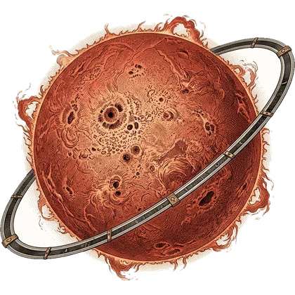
Gravures anciennes
Terre & Temps
Autour d'une géante rouge : la géographie, l'histoire, et l'actualité de France et du monde.
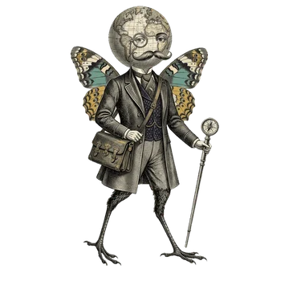
Géographie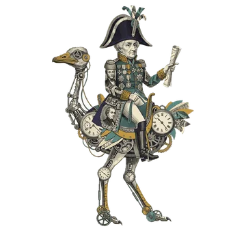
HistoireActu France
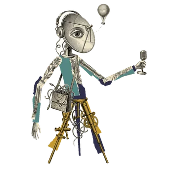
Actu monde Cultivé
Cultivé
Quinze mondes, 965 questions sourcées, des parties en direct à plusieurs. Le quiz où les enfants affrontent leurs parents — et gagnent parfois.
Ce sont de vraies questions du jeu, avec leur explication. Et oui : une des réponses est une farce. Il y en a dans tout le jeu.
Chaque réponse est expliquéeMême quand tu as juste. Avec la source, pour que tu repartes avec un fait de plus.
Le format change avec ton niveauChoix parmi quatre, réponse écrite de mémoire, cartes à relier, événements à remettre dans l'ordre.
Jamais de points négatifsUne erreur ne coûte rien. Elle revient plus tard, jusqu'à ce que tu la saches.
Chaque système a son astre et son propre style de dessin. Chaque monde a son habitant, qui t'attend à son port spatial.

Autour d'une géante rouge : la géographie, l'histoire, et l'actualité de France et du monde.

Géographie
Histoire
Actu mondeDeux naines bleues qui dansent : les sciences, la langue française et la littérature.
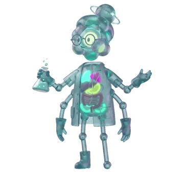
SciencesUn trou noir qui avale une étoile : le cinéma, la BD, les jeux vidéo et le sport.
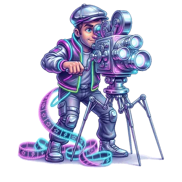
Cinéma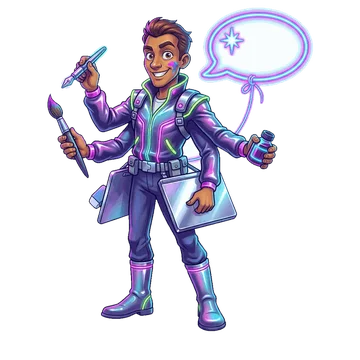
BD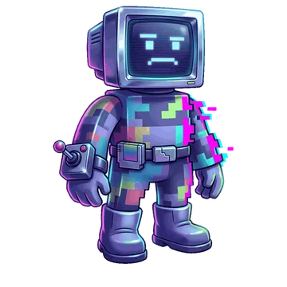
Jeux vidéoUn soleil qui coule comme de la peinture : la peinture, la sculpture, le théâtre et la musique.
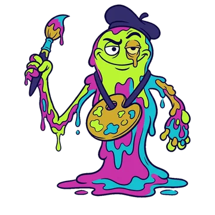
Peinture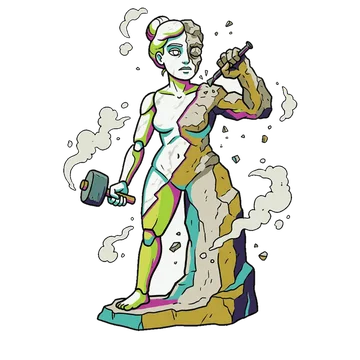
Sculpture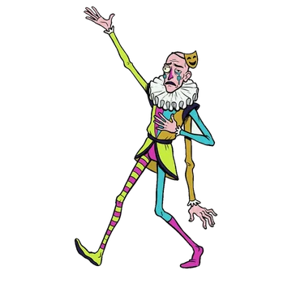
Théâtre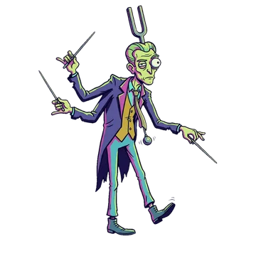
MusiqueOn y atterrit en vitesse lumière, on y lit son niveau, et on embarque pour l'expédition.
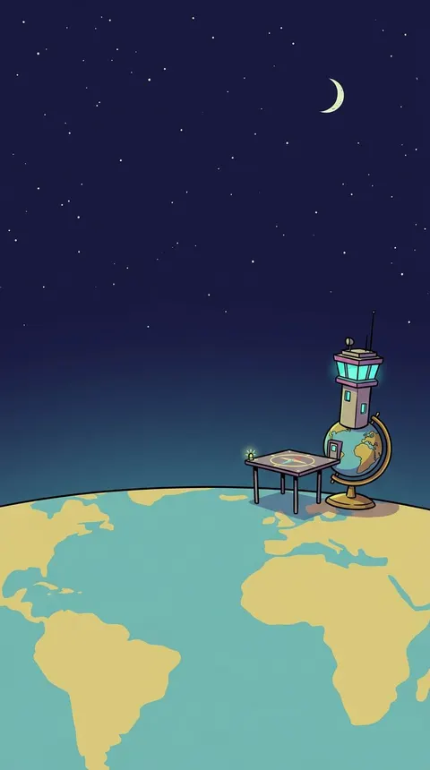
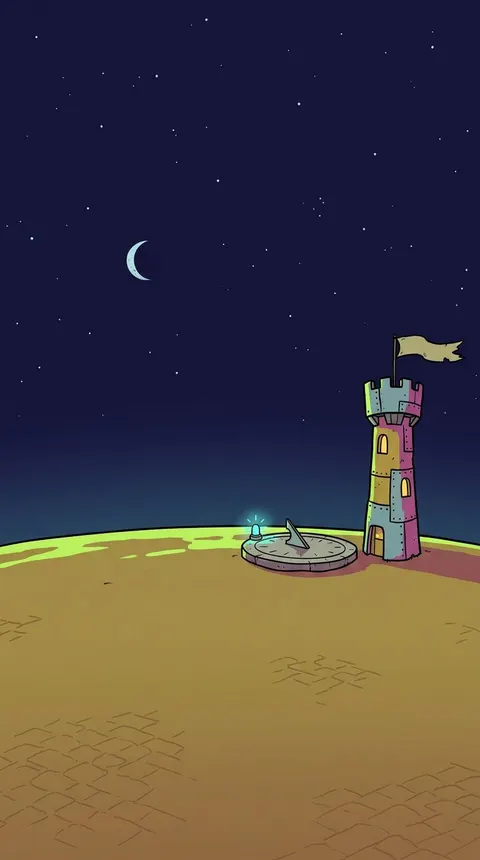
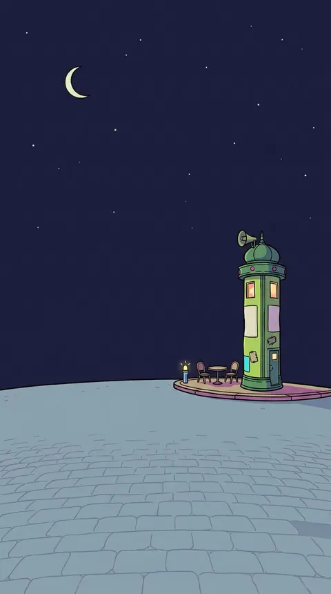
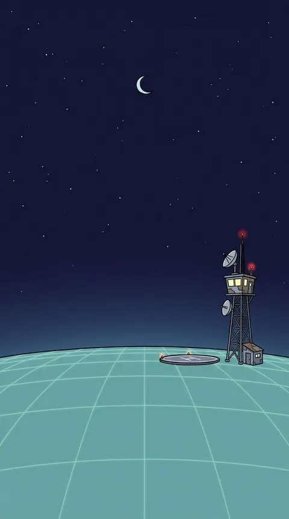
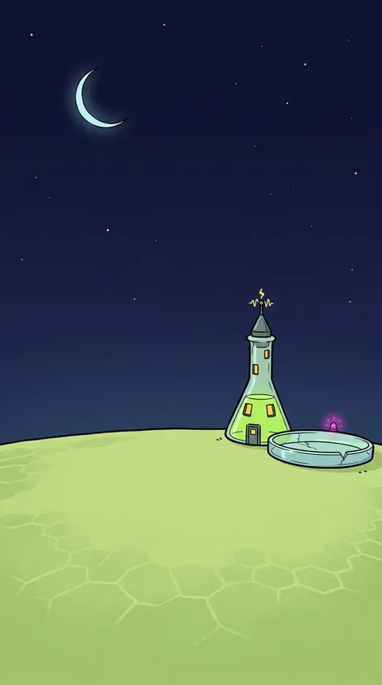
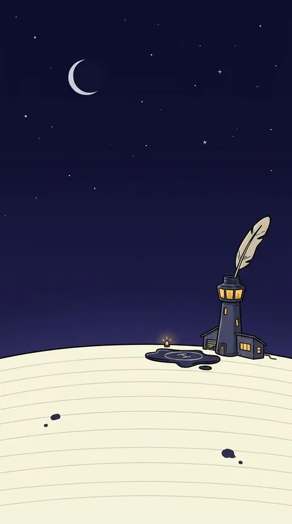
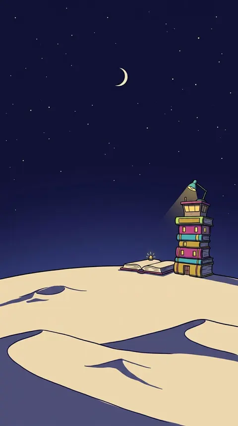
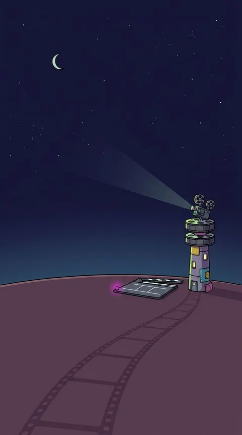
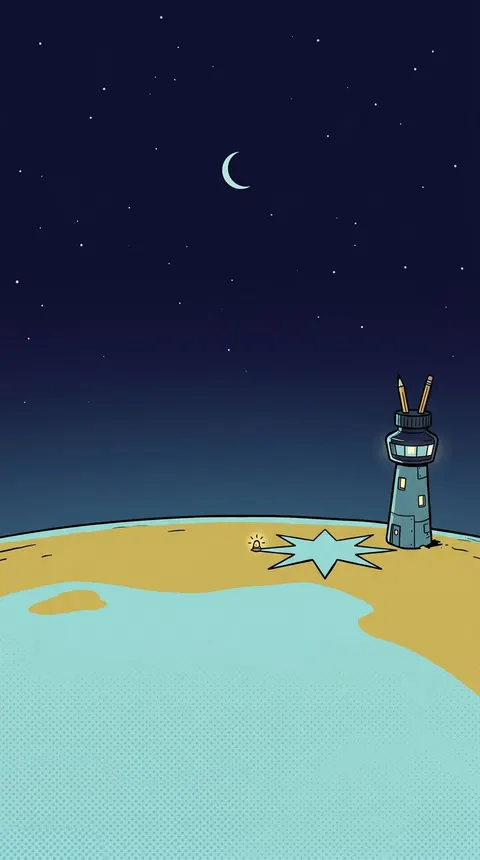
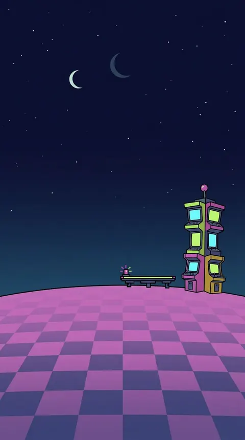
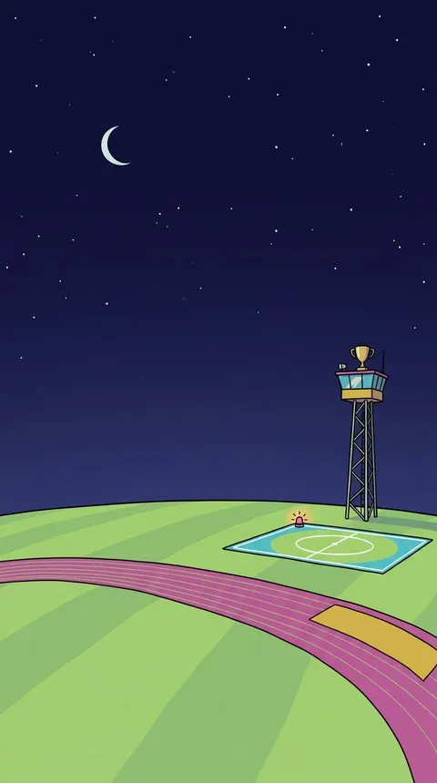
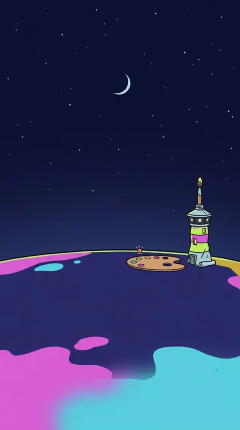
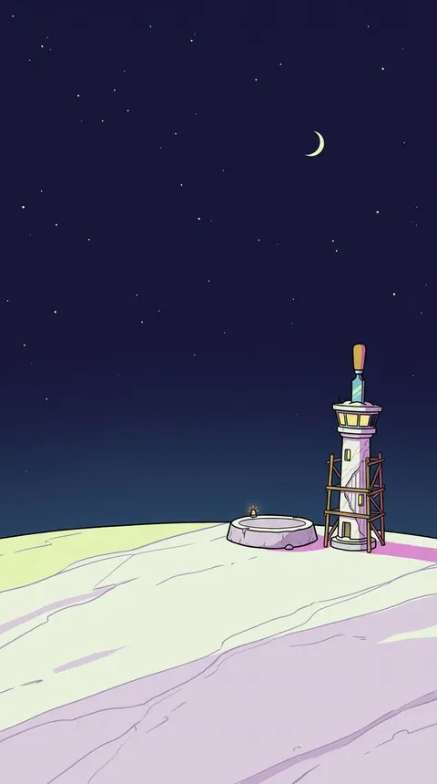
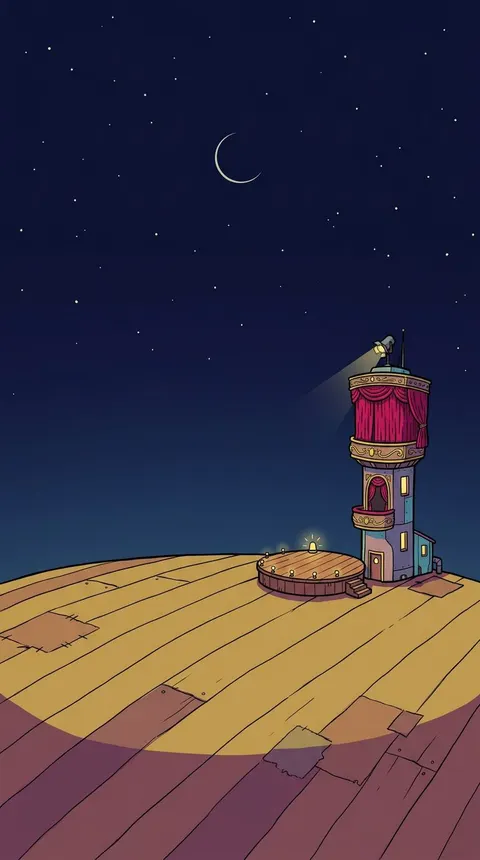
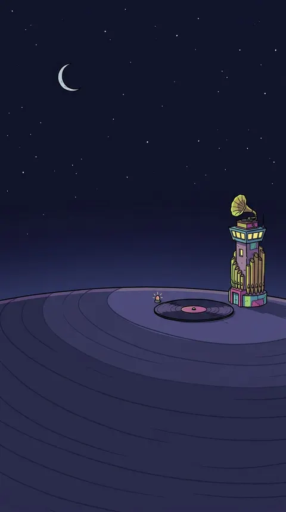
Crée une salle, invite qui tu veux par un lien, et c'est toi qui ouvres la porte. Chacun joue sur son téléphone : on voit qui a répondu, jamais ce qu'il a répondu.
Une question manquée revient le lendemain, puis à trois jours, une semaine, deux, cinq. Et quand tu la réussis enfin, le jeu te le dit.
Tu as répondu Monet au lieu de Manet ? Une question où les deux se font face reviendra.
Fort en géographie, débutant en sciences : le jeu s'ajuste séparément. L'âge ne plafonne rien, un enfant qui progresse dépasse un adulte.
Pas de compte à créer, pas de publicité, pas d'achat. On ouvre, on joue. Et on ne peut pas s'écrire entre joueurs : on joue ensemble, c'est tout.
Bientôt sur l'App Store